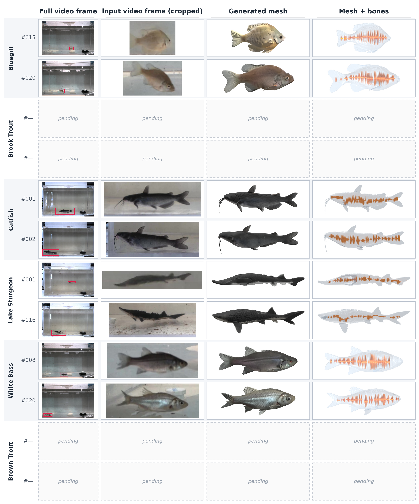
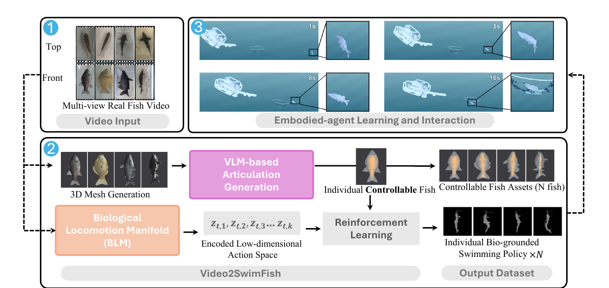
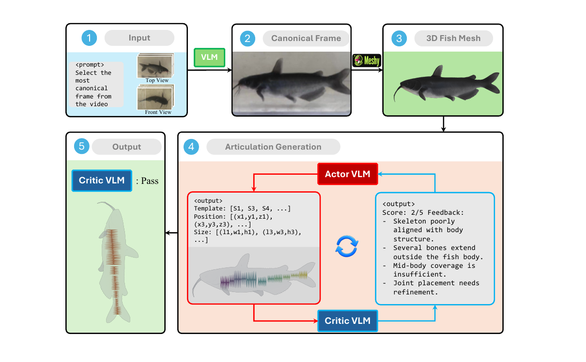
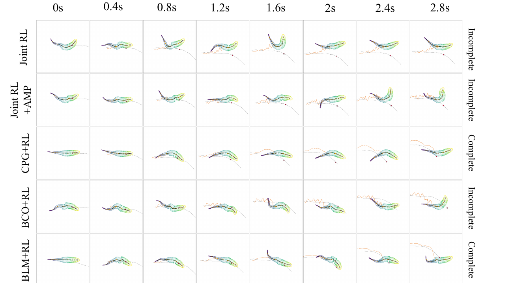
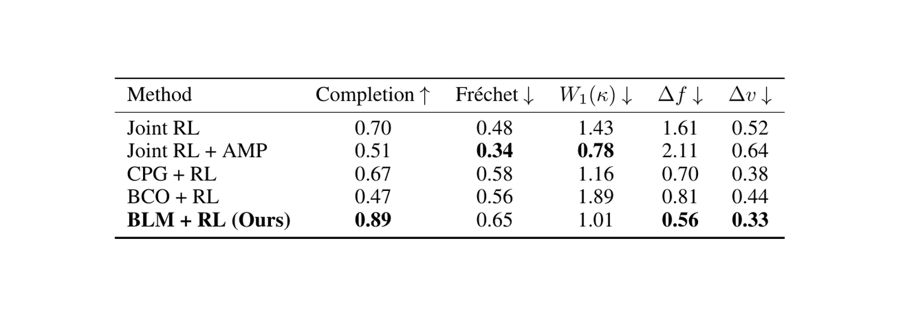
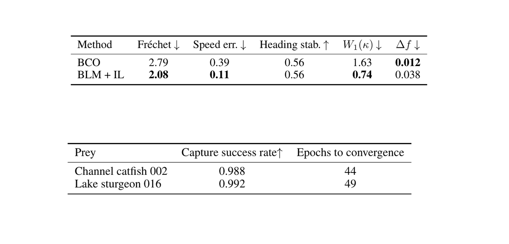

3D Mesh Generation
A canonical frame is selected from video and reconstructed into a fish mesh, then scaled using estimated body length. The latest paper reports a mean affine-aligned silhouette IoU of 0.88.
1 North Carolina A&T State University (ncat.edu)
2 University of Maryland, College Park (umd.edu)
3 North Carolina A&T State University (aggies.ncat.edu)
We present Video2SwimFish, an automated pipeline and benchmark for building controllable fish assets from real-fish videos for underwater embodied AI. Given synchronized multi-view videos of an individual fish, the pipeline reconstructs a metrically scaled deformable mesh from a VLM-selected canonical frame, generates internal articulation adapted to that individual’s morphology through a VLM actor–critic loop, and extracts a Biological Locomotion Manifold (BLM) from the fish's observed midline curvature. The BLM provides a low-dimensional action space bounded by real-fish motion, enabling an individual swimming policy to be learned for each reconstructed fish. We release two paired datasets: synchronized top- and front-view recordings of 120 individual fish across 6 species, and the controllable assets and individual swimming policies derived from them. Because every asset is tied to the animal it came from, the dataset supports a benchmark that evaluates locomotion learning not only on task success but on fidelity to that individual in trajectory shape, body curvature, and tail-beat frequency, across trajectory following, reward-free swimming behavior transfer from video, and a downstream case study in which a simulated BlueROV underwater robot captures one of the assets. We find that task success and locomotion fidelity do not necessarily improve together: the method achieving the highest task completion is not the method achieving the highest locomotion fidelity, and we identify faithful reproduction of individual animal locomotion as an open challenge for the community.

Given synchronized multi-view real fish videos, Video2SwimFish reconstructs individual fish meshes with controllable articulations, derives a Biological Locomotion Manifold from real swimming motion, and learns individual swimming policies for downstream interaction.

The articulation pipeline selects a canonical frame from multi-view video, reconstructs a 3D fish mesh with Meshy, and iteratively refines skeleton placement through an actor-critic VLM loop until the critic accepts the generated articulation.

A canonical frame is selected from video and reconstructed into a fish mesh, then scaled using estimated body length. The latest paper reports a mean affine-aligned silhouette IoU of 0.88.
An actor VLM proposes bone templates, positions, and sizes; a critic VLM scores the proposal and returns corrective feedback.
Real-fish curvature profiles are projected into a low-dimensional action representation for reinforcement learning.
Video2SwimFish evaluates locomotion learning on both task success and fidelity to the individual fish in trajectory shape, body curvature, and tail-beat frequency.



The project website, paired videos, controllable assets, and individual policies are prepared for public release. Code and data links will be updated as the public repositories are finalized.